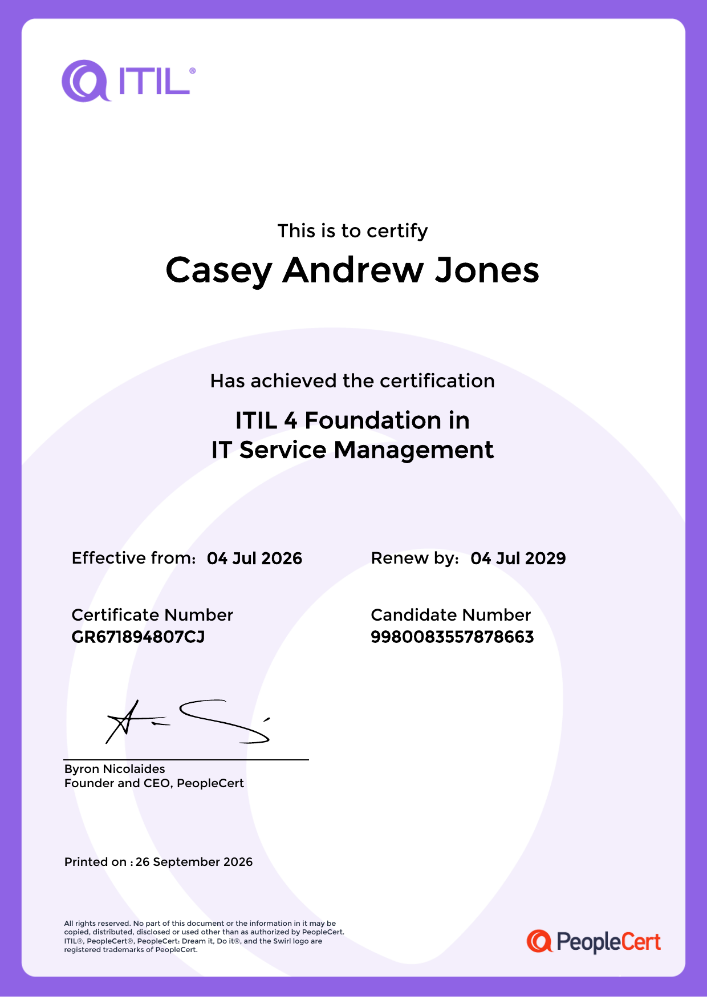
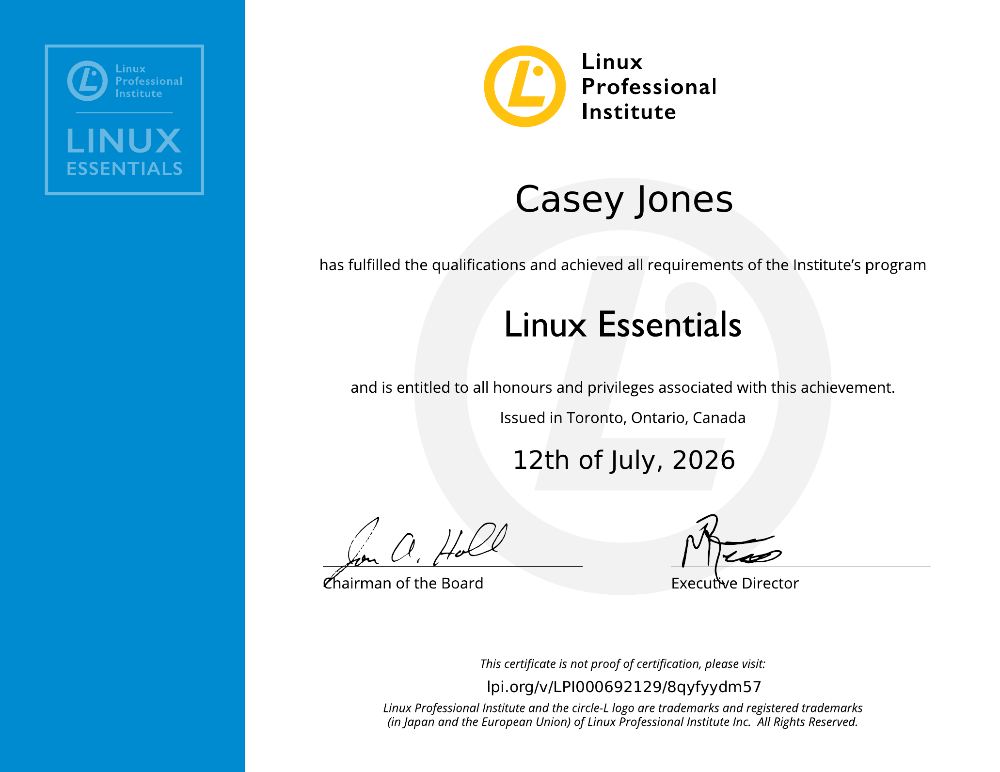
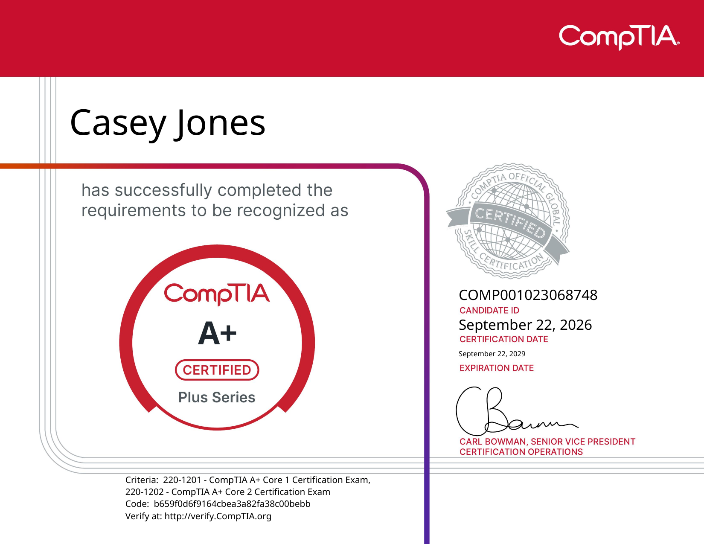

Progress
Certification Snapshot
Earned
Professional Certifications
These certifications were earned while progressing through my WGU Cloud and Network Engineering coursework.

Earned
ITIL 4 Foundation
Date Earned: July 4, 2026
Renew By: July 4, 2029
Related Course: Business of IT - Applications – D336
Skills Demonstrated: IT service management, incident management, change management, service value, documentation, service delivery, and continual improvement.

Earned
LPI Linux Essentials
Date Earned: July 12, 2026
Related Course: Linux Foundations – D281
Skills Demonstrated: Linux fundamentals, command-line usage, file systems, permissions, users, processes, open-source concepts, and basic system administration.

Earned
CompTIA A+
Date Earned: September 22, 2026
Valid Through: September 22, 2029
Related Courses: IT Foundations – D316 and IT Applications – D317
Skills Demonstrated: Computer hardware, operating systems, mobile devices, networking fundamentals, virtualization, cloud concepts, security, troubleshooting, software support, and operational procedures.
Progression
Building Skills Layer by Layer
Each certification represents another layer in my technical development. Rather than treating certifications as isolated credentials, I am applying the concepts from each one to later WGU courses and portfolio projects.
ITIL 4 Foundation
ITIL introduced the service-management side of technology operations, including incidents, changes, service delivery, documentation, and continual improvement.
LPI Linux Essentials
Linux Essentials added operating-system and command-line skills that support future work with cloud servers, AWS environments, automation, cybersecurity tools, and infrastructure troubleshooting.
CompTIA A+
CompTIA A+ strengthened my practical understanding of hardware, operating systems, troubleshooting, networking, security, software, and technical support. These skills provide a broader operational foundation for future networking and cloud engineering coursework.
Career Connection
How These Certifications Support My Cloud & Network Engineering Path
Together, these credentials create a foundation that spans both technical operations and service delivery. ITIL provides a framework for managing technology services, Linux Essentials provides practical operating-system knowledge, and CompTIA A+ strengthens hardware, software, security, networking, and troubleshooting skills.
As I progress through networking, security, automation, and AWS coursework, I will continue applying these previously learned concepts to increasingly advanced projects and infrastructure scenarios.